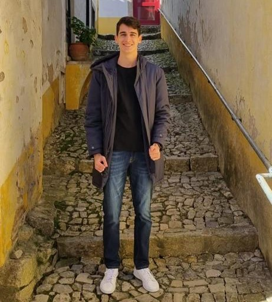

Guilherme Cezar Menezes Siqueira
SOBRE MIM:
Meu nome é Guilherme Siqueira, sou chamado por todo mundo de Meme, tenho 20 anos, nasci em Recife-PE e estudo Ciência da Computação no CIn, estou no primeiro período e já consigo estar desblocado. Tenho um total de 10 cachorros e sou torcedor fiel do Náutico. No meu tempo livre gosto de jogar bola e videogame.


/i490027.jpeg)